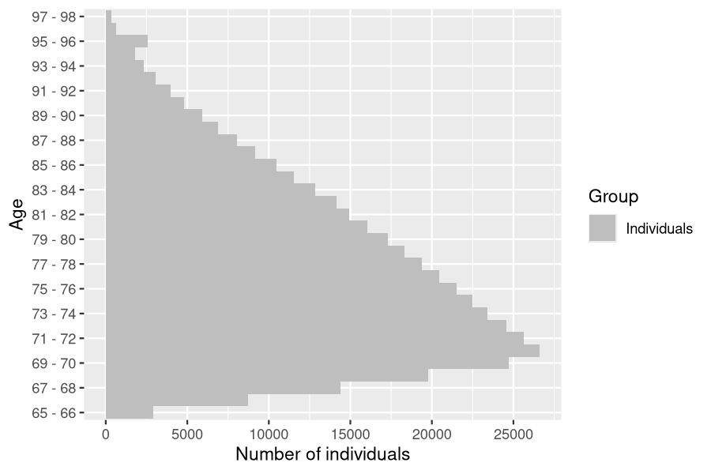
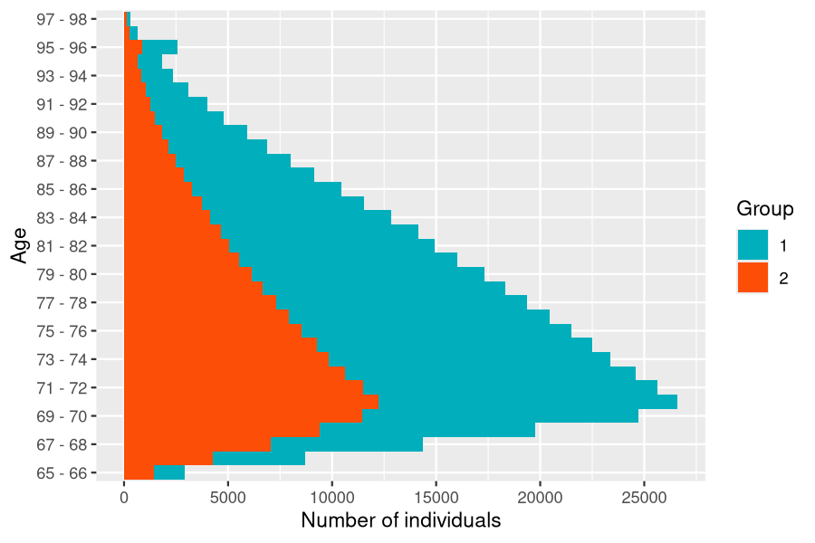
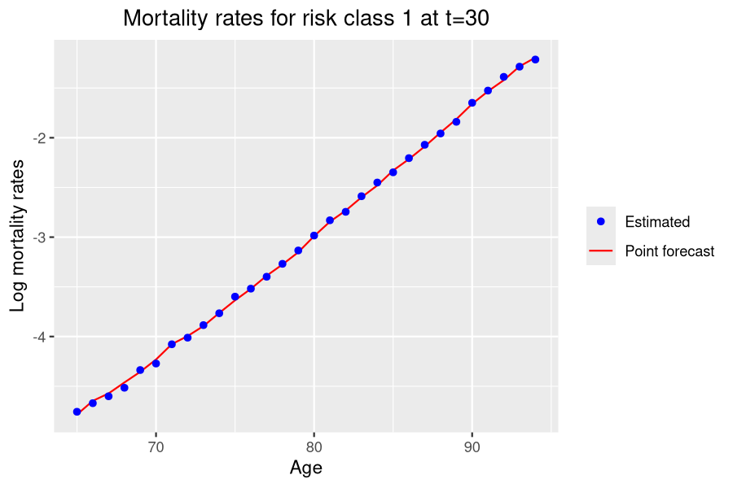
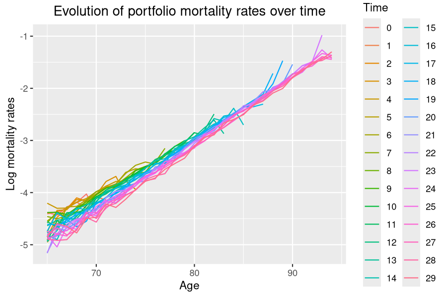

Insurance portfolio
Daphné Giorgi, Sarah Kaakai, Vincent Lemaire
Source:vignettes/IBMPopSim_insurance_portfolio.Rmd
IBMPopSim_insurance_portfolio.RmdThis vignette provides an example of usage of the package IBMPopSim, for simulating an heterogeneous life insurance portfolio.
See vignette('IBMPopSim') for a detailed presentation of the package.
1 Example description
We consider an insurance portfolio composed of males policyholders, characterized by their age and risk class (for instance smokers vs non smokers).
Entries to the portfolio are modeled by Poissonian events, and individuals can die or exit the portfolio with an intensity depending on their age and risk class.
2 Population creation
We start with an initial population of 10 000 males of age 65, distributed uniformly in each risk class.
The population data frame has thus the two (mandatory) columns:
-
birth: Date of birth of the policyholders (here the initial time is \(t_0=0\)). -
death: Date of death (NAif alive).
and the column risk_cls corresponding to the policyholders risk class.
Since individuals are free to get or interrupt a life insurance at any time, in this type of population there are entry and exit events, hence we create the population with the flags ‘entry and ’out’ set to TRUE. This will create 2 additional columns in the population for recording entry and exit events. At creation, entry values are set to NA and out values are set to FALSE.
N <- 30000
pop_df <- data.frame("birth"=rep(-65,N),"death"=rep(NA,N),"risk_cls"= rep(1:2,each= N/2))
pop_init <- population(pop_df, entry=TRUE, out=TRUE)3 Model parameters
3.1 Death intensity
Death intensities are calibrated on England and Wales (EW) males mortality data (source: Human Mortality Database), and forecasted over t=30 years by a Lee-Carter model with the package StMoMo.
Individuals in the risk class 1 are assumed to have mortality rates 20% higher that the forecasted mortality rates and individuals in the risk class 2 are assumed to have mortality rates 20% lower than the forecasted rates. The death intensity of a individual in risk class \(i=1,2\) is thus the function
\[\begin{equation} \tag{3.1} d^i(t,a)= \alpha_i \sum_{k=0}^{29}\mathbf{1}_{\{k\leq t < k+1\}} d_k(a), \quad \alpha_1 = 1.2, \quad \alpha_2 = 0.8, \end{equation}\]
and where \(d_k(a)\) is the point estimate of the mortality rate for age \(a\) and year \(2017 + k\).
EWStMoMoMale <- StMoMoData(EWdata_hmd, series = "male")
#Fitting
LC <- lc()
ages.fit <- 65:100
years.fit <- 1950:2016
LCfitMale <- fit(LC, data = EWStMoMoMale, ages.fit = ages.fit, years.fit = years.fit)
## StMoMo: Start fitting with gnm
## Initialising
## Running start-up iterations..
## Running main iterations.....
## Done
## StMoMo: Finish fitting with gnm
t <- 30
LCforecastMale <- forecast(LCfitMale, h = t)
plot(LCforecastMale)
Age and time dependent function can be created with the package function ?piecewise_xy, with allows to define age-specific mortality rates, piecewise constant in time, such as \(d^i\) in (3.1).
d_k <- apply(LCforecastMale$rates, 2, function(x) stepfun(66:100, x))
breaks <- 1:29
death_male <- piecewise_xy(breaks,d_k)
death_male(10,65) # Death rate at time t=10 (years 2027) and age 60.
## [1] 0.0090820133.2 Exit events
Individuals exit the portfolio at a rate \(\mu^{i}\), \(i=1,2\) depending on their risk class.
params$mu <- c(0.001,0.06) # Exit event rate4 Events creation
4.1 Death events creation
The vector parameter alpha will be transformed into a C++ vector (with index starting at 0) during the model creation, and death_male into a C++ function.
death_event <- mk_event_individual(
type = "death",
intensity_code = "result = alpha[I.risk_cls-1] * death_male(t,age(I, t));"
)4.2 Exit events creation
Each individual in the portfolio can exit the portfolio at a constant (individual) rate \(\mu^i\) depending on their risk class.
In the presence of events of type exit, the population must have a characteristic named out, which is set to FALSE by default (see function ‘?population’).
When an individual leaves the population, his characteristic out is set to TRUE and the date at which he exited the population is recorded in the column death.
exit_event <- mk_event_individual(
type = "exit",
intensity = "result = mu[I.risk_cls-1]; "
)4.3 Entry event creation
New policyholders enter the population at a constant rate \(\lambda\) (on average, \(\lambda\) individuals enter the portfolio each year). A new individual entering the population at age \(a\) given by a uniform variable on \([65,70]\), and is in risk class 1 with probability \(p\).
In the presence of events of type entry, the population must have a characteristic named entry, initially set to NA by default (see function ‘?population’).
When an individual enters the population, his characteristic entry is set to the date \(t\) at which he enters the population.
params$p <- 0.5
entry_event <- mk_event_poisson(
type = "entry",
intensity = "lambda",
kernel_code = "if (CUnif()<p)
newI.risk_cls =1;
else
newI.risk_cls= 2;
double a = CUnif(65,70);
newI.set_age(a,t);
newI.out = false;"
)Note that entries can also occur at a rate \(\lambda(t)\) depending on time. For more details, see documentation of ?mk_event_poisson_inhomogeneous.
5 Model creation
model <- mk_model(
characteristics = get_characteristics(pop_init), # Characteristics names and types
events = list(death_event,entry_event, exit_event), # Events list
parameters = params # Model parameters
)
summary(model)
## Events description:
## [[1]]
## Event class : individual
## Event type : death
## Event name : death
## Intensity code : 'result = alpha[I.risk_cls-1] * death_male(t,age(I, t));'
## Kernel code : ''
## [[2]]
## Event class : poisson
## Event type : entry
## Event name : entry
## Intensity code : 'lambda'
## Kernel code : 'if (CUnif()<p)
## newI.risk_cls =1;
## else
## newI.risk_cls= 2;
## double a = CUnif(65,70);
## newI.set_age(a,t);
## newI.out = false;'
## [[3]]
## Event class : individual
## Event type : exit
## Event name : exit
## Intensity code : 'result = mu[I.risk_cls-1]; '
## Kernel code : ''
##
## ---------------------------------------
## Individual description:
## names: birth death risk_cls entry out
## R types: double double integer double logical
## C types: double double int double bool
## ---------------------------------------
## R parameters available in C++ code:
## names: death_male alpha mu lambda p
## R types: closure vector vector double double
## C types: function_xy arma::vec arma::vec double double6 Simulation
6.1 Computation of event intensity bounds
For events with Poisson (constant) intensity, the bound is simply the intensity.
6.2 Simulation
sim_out <- popsim(model = model,
initial_population = pop_init,
events_bounds = c('death' = death_max, "entry"=params$lambda, "exit"=max(params$mu)),
parameters = params,
time = t,
age_max = 110,
multithreading = TRUE)Ratio of accepted events
sim_out$logs[["effective_events"]] / sim_out$logs[["proposed_events"]]
## [1] 0.25072387 Outputs
The output population sim_out$population is composed of all individuals present in the portfolio over the period \([0, t]\) (individuals in the initial population and those who entered the portfolio). Each line corresponds to an individual, with his date of birth, date of death (NA if still alive at the end of the simulation), risk class, and the characteristic out.
The characteristics out is set to TRUE for individuals who left the portfolio due to an exit event.
str(sim_out$population)
## Classes 'population' and 'data.frame': 929184 obs. of 5 variables:
## $ birth : num -65 -65 -65 -65 -65 -65 -65 -65 -65 -65 ...
## $ death : num NA NA NA NA NA NA NA NA NA NA ...
## $ risk_cls: int 1 1 1 1 1 1 1 1 1 1 ...
## $ entry : num NA NA NA NA NA NA NA NA NA NA ...
## $ out : logi FALSE FALSE FALSE FALSE FALSE FALSE ...The function ?age_pyramid computes the age pyramid of a population at a given time.
7.1 Age pyramids
age_grp <- 65:98
pyr = age_pyramid(sim_out$population, time = 30, ages=age_grp)
plot(pyr, age_breaks = as.integer(seq(1,length(age_grp)-1,by=2)))
In order to visualize both risk classes on the same age pyramid with ?plot.pyramid a column group_name containing the individuals risk classes must be added to the age pyramid, and the colors representing each subgroup have to be specified.
colnames(pyr)[2]<- "group_name"
pyr$group_name <- as.character(pyr$group_name)
colors <- c("1"="#00AFBB","2"="#FC4E07")
plot(pyr,colors,age_breaks = as.integer(seq(1,length(age_grp)-1,by=2)))
7.2 Life tables
Death and exposure tables can be computed from the simulation, taking into account the censoring due to exit events.
Note that when individuals enter the population at different ages, the functions ?death_table and ?exposure_table do not take into account this right censoring.
7.2.1 Risk class 1
Death and exposure data can be computed from the simulated portfolio. Below is an example with individuals in risk class 1. A Lee-Carter model is reestimated from the simulated data, and compared with the initial forecast.
age_grp <- 65:95
Dx <- death_table(sim_out$population[sim_out$population$risk_cls==1,],
ages = age_grp, period = 0:30)
Ex <- exposure_table(sim_out$population[sim_out$population$risk_cls==1,],
ages = age_grp, period = 0:30)
LC <- lc()
LCfitSim1 <- fit(LC, Dxt = Dx , Ext = Ex,ages=age_grp[-length(age_grp)])
7.2.2 Global portfolio
Due to the mortality differential between risk class 1 and 2, there should be more individuals in risk class 2 at higher ages. However, due to exit events, more individuals in risk class 1 exit the portfolio over time, leading to a higher proportion of individuals in risk class 1 at higher ages than expected when there are no exit events. Thus, mortality rates are closer to mortality rates in risk class 1 at higher ages.
Computation of central mortality rates
Dx_pop <- death_table(sim_out$population, ages = age_grp, period = 0:30)
Ex_pop <- exposure_table(sim_out$population, ages = age_grp, period = 0:30)
mx_pop <- Dx_pop/Ex_pop
Evolution of portfolio mortality rates over time
The decrease in mortality rates is slower in the portfolio than in the global population due to composition changes.

Cohort mortality rates

8 Different simulations with the same model
The initial population and model parameters can be modified without have to recompile the model, in order to simulate the population model with different input. The event bounds must be modified accordingly before running again the simulation.
An event can also be deactivated by setting the event bound to 0.
See vignette('IBMPopSim_human_pop') for several examples.